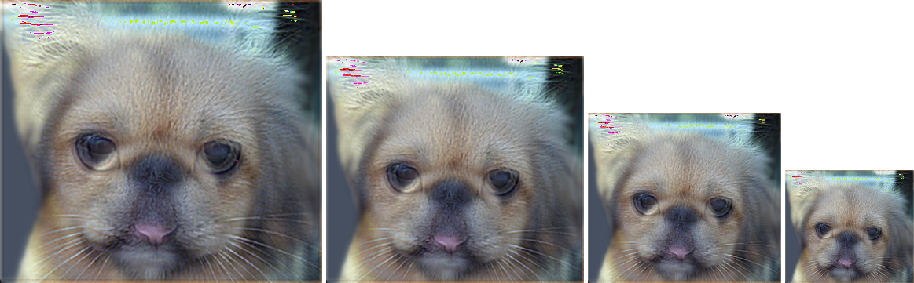
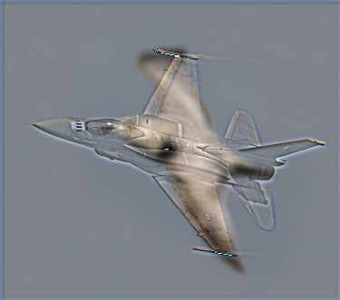
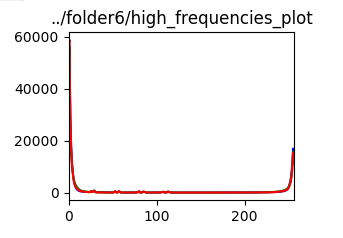
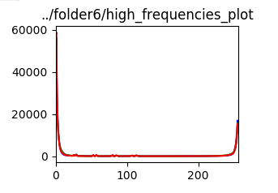

Project 1: Image Filtering and Hybrid Images
The code for the myfilter function implement zero padding and the kenel convolution. To handle RGB image we split to each channel and performed padding and convolution operation on each of the channel. For each input image the padding is added with formula (k-1)/2 [1], where k is the kernel size could be the heigh or width. Using this formula obtained we can obtain the number of zero padding to added at each border of the image. So the padding will work by putting the image in the centre in correspond to the number of zero padding layer at each left and right border. After that the padded image will be convolved with the designated kernel, starting the diagonal centre of the padded image we obtained part of the padded image from the subtracted to the padding size in height and width of the kernel and also the addition towards the same padding size. For example if our kernel size 5,5 the starting index would be [2,2] , the surrouding taken would be all area from [0,0] to [0,4],[4,0] and [4,4] will be mutliplied with the kernel the result of the multiplication will yield a total which will be store to the output image of the same size with the input image.This process is done for all the point of anchor of the centre padded image. For any convolution result yielding a negative value we cast the data type into 16 bit integer to allow a wider range of integer values. The gaussian kernel used is a one dimension size with formula like in [2]. For each of the position we compute the gaussian value using the mentioned formula before. The hybrid image will add the low frequency image1 and the high frequency image2. For any overflow encountered the numpy library will normalized to the range of unsigned 8 bit integer. The image pyramid is also generated with different resize ratio for each of the 4 downsampled image. The pyramid is made by making an image matrix of the total size of the width of all the images with the number of gap desired. For all the images that went through the process we also plot the RGB curve to provide a better analysis of the discrete distribution of the images.
Einstein and Marilyn


|


|

|
The kernel size for the low pass frequency of the first image is 11 and the kernel size for the high pass frequency of the first image is 9 with sigma of the gaussian kernel used is 11. After applying the low pass filter to the first image with we obtain a less steeper RGB curve. Applying the high pass filter to the second image produce an inverted kind RGB curve. The combination of high frequency image with the low frequency produce a steeper RGB curve of the low frequencies curve
Fish and Submarine


|


|
The kernel size for the low pass frequency of the first image is 11 and the kernel size for the high pass frequency of the first image is 9 with sigma of the gaussian kernel used is 9. After applying the low pass filter to the first image with we obtain a less steeper RGB curve. Applying the high pass filter to the second image produce an inverted flat RGB curve. The combination of high frequency image with the low frequency produce a steeper RGB curve of the low frequencies curve
Dog and Cat


|


|
|  |
The kernel size for the low pass frequency of the first image is 11 and the kernel size for the high pass frequency of the first image is 9 with sigma of the gaussian kernel used is 15. After applying the low pass filter to the first image with we obtain a more steeper RGB curve. Applying the high pass filter to the second image produce an inverted RGB curve. The combination of high frequency image with the low frequency produce a smoother RGB curve of the low frequencies curve
Bird and plane


|


|
|  |
The kernel size for the low pass frequency of the first image is 11 and the kernel size for the high pass frequency of the first image is 9 with sigma of the gaussian kernel used is 7. After applying the low pass filter to the first image with we obtain a more steeper RGB curve with almost same peak for each of the RGB. Applying the high pass filter to the second image produce an inverted rigt angle like RGB curve. The combination of high frequency image with the low frequency produce a steeper RGB curve with peak different of higher green to read and blue of the low frequencies curve
Motorcyle and Bicycle


|


|
The kernel size for the low pass frequency of the first image is 11 and the kernel size for the high pass frequency of the first image is 9 with sigma of the gaussian kernel used is 13. After applying the low pass filter to the first image with we obtain a more steeper RGB curve. Applying the high pass filter to the second image produce almost a straight line like RGB curve. The combination of high frequency image with the low frequency produce a smoother RGB curve of the low frequencies curve
Banana and Mango

|
 

|
The kernel size for the low pass frequency of the first image is 11 and the kernel size for the high pass frequency of the first image is 9 with sigma of the gaussian kernel used is 17. After applying the low pass filter to the first image with we obtain a more turbulent RGB curve. Applying the high pass filter to the second image produce an inverted like RGB curve. The combination of high frequency image with the low frequency produce a smoother and steeper RGB curve of the low frequencies curve